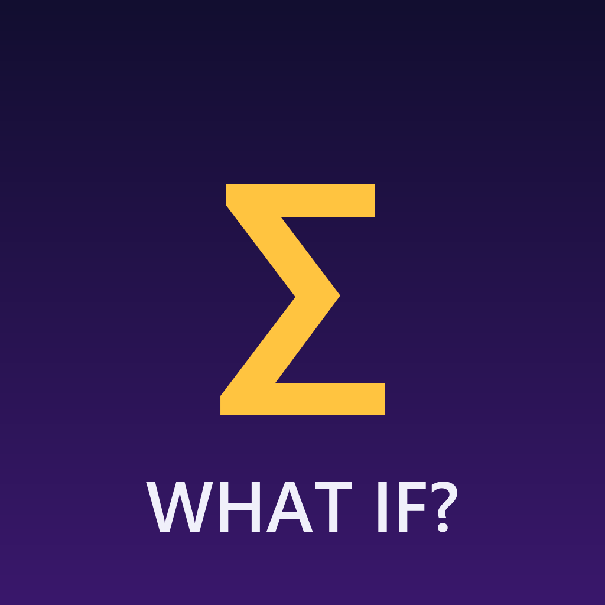

Sigma Moments makes short "What if?" videos about science and history: what would really happen if you shrank to the size of a coin, or banked the $24 paid for Manhattan in 1626. Every number is worked out from real sources.
The videos are made by our own production tool and published to our own accounts, including TikTok @sigma.moment._. The tool uses TikTok's Login Kit and Content Posting API only to upload our finished videos to our own TikTok account. It does not access, collect or post on behalf of anyone else.